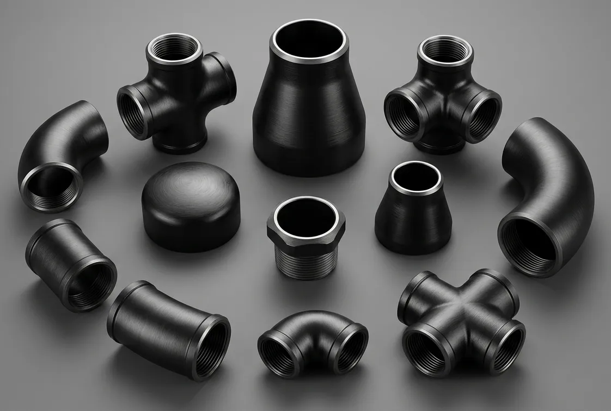

Gururaj Infradesigns is a trusted supplier of Carbon Steel Pipe Fittings in ASTM A234 WPB, WPC, ASTM A420 WPL6, and ASTM A860 WPHY 42, 52, 60, 65, 70 grades including elbows, tees, reducers, pipe caps, and stub ends for industrial piping applications.
Gururaj Infradesigns is a trusted Carbon Steel Pipe Fittings Manufacturer in India, supplying high-quality piping components designed for strength, durability, and dependable performance across industrial piping systems. Carbon steel pipe fittings are widely used to connect, redirect, reduce, or terminate pipelines in applications where mechanical strength, cost-effectiveness, and long service life are important considerations.
As a leading Carbon Steel Pipe Fittings Supplier in India, we offer elbows, tees, reducers, pipe caps, stub ends, and crosses manufactured to international standards for use in oil & gas, petrochemical, power generation, water treatment, infrastructure, and engineering industries. Our fittings are designed to deliver reliable performance in low, medium, and high-pressure piping systems across diverse industrial environments.

Carbon Steel Pipe Fittings are among the most widely used piping components in industrial and commercial piping systems. Their excellent strength, ease of fabrication, and economic advantages make them suitable for handling water, steam, gas, oil, and process fluids across various operating conditions.
Available in multiple ASTM specifications and high-yield grades, carbon steel pipe fittings support both standard process piping and demanding pipeline applications. They are extensively utilized in refineries, transmission pipelines, power plants, and infrastructure projects where reliable flow management and structural integrity are essential.
| Parameter | Details |
|---|---|
| Product Name | Carbon Steel Pipe Fittings |
| Product Types | Elbow, Tee, Reducer, Pipe Cap, Stub End, Cross |
| Material Grades | ASTM A234 WPB, ASTM A234 WPC, ASTM A420 WPL6, ASTM A860 WPHY 42, WPHY 52, WPHY 60, WPHY 65, WPHY 70 |
| Standards | ASTM, ASME, ANSI, MSS SP |
| Connection Types | Buttweld, Socketweld, Threaded |
| Size Range | ½" NB to 48" NB |
| Schedule Range | SCH 10 to SCH XXS |
| Manufacturing Process | Seamless & Welded |
| Testing | Hydro Test, PMI, Visual Inspection |
| Certification | EN 10204 3.1 / MTC Available |
Changes the direction of fluid flow within a piping system.
Creates branch connections between pipelines.
Connects pipes of different diameters.
Closes and seals the end of a pipeline.
Used with lap joint flanges for easy maintenance.
Creates four-way pipeline connections.
Pipe fittings are essential components that ensure efficient flow control and reliable pipeline connectivity. Selecting the correct fitting type helps optimize system performance, minimize pressure losses, and improve long-term operational efficiency.
| Connection Type | Description | Typical Applications |
|---|---|---|
| Buttweld | Permanently welded for strong, leak-proof joints. | Pipelines, Refineries, Process Plants |
| Socketweld | Pipe inserted into socket and welded. | Small-bore high-pressure systems |
| Threaded | Mechanical threaded connection without welding. | Utility and maintenance piping |
| Flanged | Bolted connection allowing easy removal and inspection. | Industrial process systems |
The choice of connection method depends on operating pressure, maintenance accessibility, installation requirements, and system design. Proper connection selection contributes to long-term piping reliability and safety.
One of the most widely specified carbon steel grades, Carbon Steel ASTM A234 WPB Pipe Fittings are commonly used in refineries, power plants, industrial process piping, and pressure systems. Their combination of strength, weldability, and cost-effectiveness makes them a preferred choice for general-purpose piping applications.
Manufactured for high-strength pipeline applications, Carbon Steel ASTM A860 WPHY 42 Pipe Fittings provide improved mechanical properties and reliable performance under pressure. These fittings are frequently used in oil & gas transmission lines and infrastructure projects requiring enhanced structural integrity.
Offering higher yield strength than standard carbon steel grades, Carbon Steel ASTM A860 WPHY 52 Pipe Fittings are widely used in transmission pipelines, petrochemical facilities, and critical industrial piping systems where strength and durability are key requirements.
| Grade | Key Characteristics | Typical Applications |
|---|---|---|
| ASTM A860 WPHY 42 | Offers good strength, weldability, and toughness for standard pipeline systems. | Oil & Gas Pipelines, Water Transmission, Infrastructure Projects |
| ASTM A860 WPHY 52 | Provides higher yield strength and improved pressure-handling capability for demanding services. | High-Pressure Pipelines, Petrochemical Plants, Energy Projects |
Both grades are designed for high-strength pipeline applications. WPHY 42 is commonly used for general transmission systems, while WPHY 52 is preferred where higher strength and enhanced performance are required for more demanding operating conditions.
| Industrial Requirement | Carbon Steel Advantage |
|---|---|
| Mechanical Strength | Suitable for demanding industrial service conditions. |
| Cost Efficiency | Provides economical piping solutions. |
| Excellent Weldability | Supports easy fabrication and installation. |
| Wide Availability | Available in numerous grades and sizes. |
| Pressure Handling Capability | Suitable for moderate and high-pressure systems. |
| Versatile Applications | Used across multiple industrial sectors. |
Carbon steel pipe fittings remain one of the most preferred piping materials due to their strength, affordability, and adaptability across a broad range of applications.
Carbon steel pipe fittings are extensively used in upstream, midstream, and downstream operations where reliable flow control and mechanical strength are required for safe fluid transportation.
Suitable for process piping systems handling hydrocarbons, gases, and industrial fluids under varying pressure and temperature conditions.
Used in steam lines, cooling water systems, utility piping, and auxiliary plant infrastructure where durability and reliability are essential.
Widely utilized in water distribution networks, treatment plants, utility projects, and municipal infrastructure systems.
Gururaj Infradesigns maintains inventory across multiple carbon steel grades and specifications to support industrial procurement requirements. Our range includes elbows, tees, reducers, pipe caps, stub ends, and crosses suitable for diverse piping applications.
With a focus on product quality, timely deliveries, and dependable customer support, we serve EPC contractors, engineering companies, fabricators, and industrial buyers seeking reliable pipe fitting solutions for critical projects.
At Gururaj Infradesigns, quality is an integral part of our manufacturing and supply process. Our carbon steel pipe fittings are produced using quality-tested materials and undergo inspections for dimensional accuracy, material integrity, and overall performance.
As an ISO Certified Company, we are committed to maintaining consistent quality standards and supplying dependable piping solutions that meet industrial expectations.
The performance of any piping system depends on the quality of its components. Gururaj Infradesigns supplies carbon steel pipe fittings engineered to provide dependable flow management, structural integrity, and long-term service performance across industrial environments. Our commitment to quality, technical expertise, and reliable supply enables customers to source piping solutions with confidence while supporting the success of their engineering and infrastructure projects.